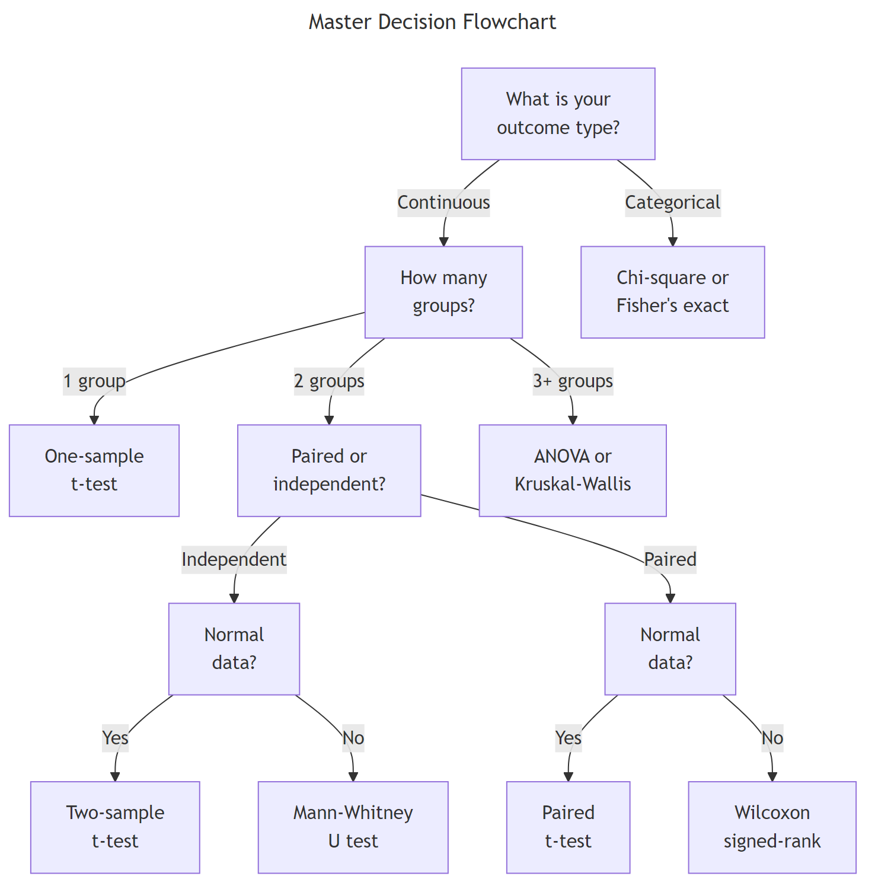
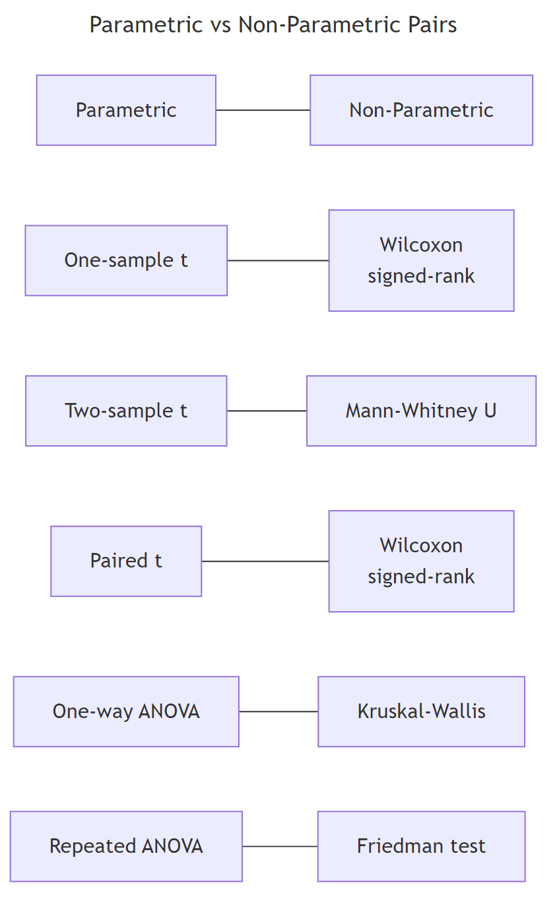
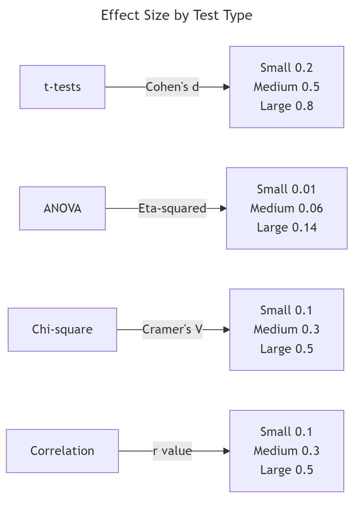

Which Statistical Test in R? A Decision Flowchart That Answers in 5 Questions
A statistical test decision flowchart guides you from your research question to the correct hypothesis test by asking about your outcome type, number of groups, pairing structure, and distribution shape.
Introduction
You have data, a research question, and at least 20 statistical tests to choose from. How do you pick the right one? Most tutorials hand you a giant table and say "good luck." This post takes a different approach.
Instead of memorizing a table, you will answer five diagnostic questions about your data. Each answer eliminates entire branches of wrong tests and narrows the field to exactly one correct choice. By the end, you will have a reusable mental checklist you can apply to any dataset.
Everything here uses base R's built-in stats package. No extra installations are needed, and every code block runs directly in your browser. We will cover the most common tests for comparing groups and testing associations, plus how to measure effect size so your results carry practical meaning, not just statistical significance.
What Type of Outcome Variable Do You Have?
The very first question is the most important one. Every statistical test is designed for a specific type of outcome, and using the wrong type leads to nonsensical results.
An outcome variable (also called the dependent variable or response variable) is the thing you are measuring or trying to explain. It falls into one of two broad categories.
Continuous outcomes are numeric measurements on a scale where differences are meaningful. Examples include height in centimeters, test scores, blood pressure, and miles per gallon. Categorical outcomes are labels that place observations into groups. Examples include survived/died, treatment group A/B/C, and pass/fail.
Let's inspect both types in R using built-in datasets.
The class() function returns "numeric" for continuous variables and "character" or "factor" for categorical ones. The str() function gives you a quick snapshot of every column's type at once.
If your outcome is continuous (numeric), you are heading toward t-tests, ANOVA, or their non-parametric equivalents. If your outcome is categorical, you are heading toward chi-square tests or Fisher's exact test.
Try it: For each variable below, decide whether it is continuous or categorical: (a) patient weight in kg, (b) tumor stage (I, II, III, IV), (c) reaction time in milliseconds, (d) smoker yes/no.
Click to reveal solution
Explanation: Weight and reaction time are measured on a numeric scale. Tumor stage and smoker status place observations into discrete groups.
How Many Groups Are You Comparing?
Once you know your outcome type, the next question is how many groups you are comparing. This determines whether you need a one-sample, two-sample, or multi-sample test.
- One group: You compare a single sample against a known reference value (e.g., "Is the average height of this class different from the national average of 170 cm?").
- Two groups: You compare two samples against each other (e.g., "Do men and women differ in blood pressure?").
- Three or more groups: You compare multiple samples simultaneously (e.g., "Do patients on Drug A, Drug B, and placebo differ in recovery time?").
Let's count groups in practice.
With 3 cylinder groups, we need a multi-sample test (ANOVA or Kruskal-Wallis), not a t-test. The table() function also reveals whether groups are balanced. Here the groups range from 7 to 14 observations, which is mildly unbalanced but workable.

Figure 1: Master decision flowchart: answer 5 questions to find your test.
Try it: The iris dataset has a Species column. How many groups does it contain, and how many observations per group?
Click to reveal solution
Explanation: unique() extracts distinct species names, and length() counts them. The table() output shows a perfectly balanced design with 50 observations per group.
Are Your Samples Paired or Independent?
When you have two (or more) groups, the next question is whether the observations in those groups are linked. This distinction changes which test is appropriate and how variance is estimated.
Paired samples (also called dependent or repeated measures) occur when the same subjects are measured under two conditions. Classic examples include before-and-after measurements, left-eye vs right-eye readings, and pre-test vs post-test scores. The key feature is that each observation in group A has a specific partner in group B.
Independent samples occur when the subjects in each group are completely different people (or items). A drug trial comparing patients who received Drug A against different patients who received Drug B uses independent samples.
Let's create both types and see how the test choice differs.
The distinction matters because paired designs reduce noise. Each subject serves as their own control, which removes between-subject variability.
Now let's run both the correct and incorrect test to see the difference.
Notice the dramatic difference. The paired test correctly detects the treatment effect (p < 0.001) because it accounts for the within-subject correlation. The independent test misses it entirely (p = 0.11) because it treats the natural variation between patients as noise.
Try it: A researcher measures typing speed (words per minute) for 8 employees before and after an ergonomic keyboard upgrade. Is this paired or independent? Assign your answer to ex_design.
Click to reveal solution
Explanation: The same 8 employees are measured twice (before and after), so each "before" observation is linked to a specific "after" observation. This is a paired design.
Is Your Data Normally Distributed?
The fourth question determines whether you can use a parametric test (which assumes a bell-shaped distribution) or should switch to a non-parametric alternative (which makes no distributional assumptions).
Normality matters because parametric tests like the t-test calculate probabilities using the normal distribution. When your data is heavily skewed or has extreme outliers, those probability calculations become unreliable.
The Shapiro-Wilk test is the most widely used formal normality check. It tests whether your data could plausibly come from a normal distribution. A small p-value (typically < 0.05) means the data departs significantly from normality.
The normal data passes the test (p = 0.55, no evidence against normality). The skewed data fails (p = 0.001, clearly non-normal). For the skewed data, you would switch from a parametric test (like the t-test) to its non-parametric counterpart (like the Mann-Whitney U test).
A QQ plot gives you a visual sanity check alongside the formal test.
In the QQ plot, points that follow the diagonal line indicate normality. The normal data hugs the line closely. The skewed data curves away, especially in the upper tail, a clear visual signal of non-normality.

Figure 2: Every parametric test has a non-parametric counterpart.
Every parametric test has a non-parametric partner. When normality fails, swap to the non-parametric version. The table below maps each pair.
| Parametric Test | R Function | Non-Parametric Alternative | R Function | |
|---|---|---|---|---|
| One-sample t-test | t.test(x, mu = ...) |
Wilcoxon signed-rank | wilcox.test(x, mu = ...) |
|
| Two-sample t-test | t.test(x, y) |
Mann-Whitney U | wilcox.test(x, y) |
|
| Paired t-test | t.test(x, y, paired = TRUE) |
Wilcoxon signed-rank | wilcox.test(x, y, paired = TRUE) |
|
| One-way ANOVA | aov(y ~ group) |
Kruskal-Wallis | kruskal.test(y ~ group) |
|
| Repeated-measures ANOVA | aov(y ~ trt + Error(subj)) |
Friedman test | `friedman.test(y ~ trt \ | subj)` |
Try it: Generate 25 random values from a chi-squared distribution with 3 degrees of freedom using rchisq(25, df = 3). Run shapiro.test() on the result. Based on the p-value, would you use a parametric or non-parametric test?
Click to reveal solution
Explanation: A chi-squared distribution with 3 degrees of freedom is right-skewed. The Shapiro-Wilk test rejects normality (p < 0.05), so you should use a non-parametric test like Mann-Whitney U or Kruskal-Wallis.
What Is the Correct Test, And How Do You Measure Its Effect?
You have now answered four questions: outcome type, number of groups, paired or independent, and normality. The fifth and final question brings everything together, and adds a crucial dimension that most guides skip: effect size.
A p-value tells you whether an effect exists. An effect size tells you how big that effect is. A drug that lowers blood pressure by 0.5 mmHg might be statistically significant with a large enough sample, but it is practically meaningless. Always report both.
Here is the complete decision map. Find your row based on your answers to questions 1 through 4, then read off the correct test and its effect size metric.
Now let's compute effect sizes for the two most common scenarios: Cohen's d for a t-test and eta-squared for ANOVA.
Cohen's d measures how many standard deviations apart two group means are. The formula is straightforward: the difference in means divided by the pooled standard deviation.
A Cohen's d of around 1.0 means the two groups differ by a full standard deviation, that is a large, clinically meaningful effect.
Eta-squared measures the proportion of total variance explained by the grouping variable. It ranges from 0 to 1, where higher values mean the groups explain more of the variation.
An eta-squared of 0.73 is extraordinarily large. Cylinder count explains nearly three-quarters of the variation in fuel efficiency. This is both statistically significant and practically important.

Figure 3: Effect size benchmarks by test family.
Try it: Two groups have means of 50 and 55, both with a standard deviation of 12. Calculate Cohen's d and classify the effect as small, medium, or large.
Click to reveal solution
Explanation: A Cohen's d of 0.417 falls between the small (0.2) and medium (0.5) benchmarks. It rounds to a medium effect, the groups differ by about four-tenths of a standard deviation.
Common Mistakes and How to Fix Them
Mistake 1: Running multiple t-tests instead of ANOVA
❌ Wrong:
Why it is wrong: Each t-test has a 5% false positive chance. Running three raises the family-wise error rate to 1 - (0.95)^3 = 14.3%. With 10 groups you would have 45 comparisons and a 90%+ false positive chance.
✅ Correct:
Mistake 2: Treating paired data as independent
❌ Wrong:
Why it is wrong: Ignoring the pairing adds between-subject variability to the error term. The test loses power and may fail to detect a real effect.
✅ Correct:
Mistake 3: Reporting only p-values without effect sizes
❌ Wrong:
Why it is wrong: A p-value says whether an effect exists, not how big it is. With n = 100,000, a half-point difference can be "highly significant." Without effect size, nobody can judge practical importance.
✅ Correct:
Mistake 4: Using parametric tests on heavily skewed small samples
❌ Wrong:
Why it is wrong: With only 12 observations and strong skewness, the t-test's normality assumption is badly violated. The Central Limit Theorem does not rescue you at n = 12.
✅ Correct:
Mistake 5: Confusing statistical and practical significance
❌ Wrong: "p < 0.001 therefore the effect is important." This is a logical error. Statistical significance depends on sample size. With n = 1,000,000, even a 0.01-unit difference can be significant.
✅ Correct: Report the effect size, confidence interval, and interpret in domain context. Ask: "Is this difference big enough to matter to the people affected?"
Practice Exercises
Exercise 1: Walk through the 5-question flowchart
A researcher measured reaction times (in milliseconds) for two independent groups: 20 participants who drank coffee and 20 who drank water. The reaction time data is roughly normal. Walk through all 5 questions and run the correct test.
Click to reveal solution
Explanation: The outcome is continuous, there are 2 independent groups, and both pass normality. The correct test is the two-sample t-test. Cohen's d quantifies the separation between groups in standard deviation units.
Exercise 2: ANOVA or Kruskal-Wallis?
Three dosage levels of a medication (low, medium, high) are tested on different patients. The outcome is pain score (0-10 scale). The low-dose group's data is heavily skewed. Decide between ANOVA and Kruskal-Wallis, run the test, and report the appropriate effect size.
Click to reveal solution
Explanation: The low-dose group fails Shapiro-Wilk, so ANOVA assumptions are violated. Kruskal-Wallis is the correct non-parametric alternative for 3+ independent groups. Epsilon-squared is its effect size metric, interpreted similarly to eta-squared.
Putting It All Together
Let's walk through a complete real-world example from start to finish. The research question: "Does engine type (4-cylinder, 6-cylinder, or 8-cylinder) affect fuel efficiency?"
We will answer all 5 questions, run the appropriate test, check assumptions, and report the effect size.
All three pairwise comparisons are significant. Four-cylinder cars get the best mileage (mean 26.7 mpg), followed by six-cylinder (19.7 mpg), then eight-cylinder (15.1 mpg). The effect is large, and the pattern makes physical sense, more cylinders burn more fuel.
Summary
Here is the complete 5-question framework at a glance.
| Question | Your Answer | Leads To |
|---|---|---|
| 1. Outcome type? | Continuous | t-tests / ANOVA branch |
| 1. Outcome type? | Categorical | Chi-square / Fisher branch |
| 2. How many groups? | 1 | One-sample test |
| 2. How many groups? | 2 | Two-sample test |
| 2. How many groups? | 3+ | ANOVA / Kruskal-Wallis |
| 3. Paired or independent? | Paired | Paired test variant |
| 3. Paired or independent? | Independent | Independent test variant |
| 4. Normal distribution? | Yes | Parametric version |
| 4. Normal distribution? | No | Non-parametric version |
| 5. Effect size? | Always | Report alongside p-value |
Quick reference for the most common tests:
| Scenario | Test | R Function | Effect Size |
|---|---|---|---|
| 1 group vs known value | One-sample t-test | t.test(x, mu = value) |
Cohen's d |
| 2 independent, normal | Two-sample t-test | t.test(x, y) |
Cohen's d |
| 2 independent, non-normal | Mann-Whitney U | wilcox.test(x, y) |
r = Z / sqrt(N) |
| 2 paired, normal | Paired t-test | t.test(x, y, paired = TRUE) |
Cohen's d |
| 2 paired, non-normal | Wilcoxon signed-rank | wilcox.test(x, y, paired = TRUE) |
r = Z / sqrt(N) |
| 3+ independent, normal | One-way ANOVA | aov(y ~ group) |
Eta-squared |
| 3+ independent, non-normal | Kruskal-Wallis | kruskal.test(y ~ group) |
Epsilon-squared |
| Categorical, large N | Chi-square test | chisq.test(table) |
Cramer's V |
| Categorical, small N | Fisher's exact test | fisher.test(table) |
Odds ratio |
FAQ
Can I use a t-test if my data isn't perfectly normal?
Yes, if your sample size is large enough. The Central Limit Theorem guarantees that the sampling distribution of the mean approaches normality as n grows. With n > 30 per group, the t-test is robust to moderate non-normality. For small samples (n < 15) with visible skewness, switch to the non-parametric alternative.
What's the difference between Mann-Whitney U and Wilcoxon rank-sum?
They are the same test with two names. The Mann-Whitney U test and the Wilcoxon rank-sum test are mathematically equivalent. In R, wilcox.test(x, y) performs both. The test compares the ranks of values rather than the raw values, making it distribution-free.
How do I choose between chi-square and Fisher's exact test?
Use chi-square when all expected cell counts are 5 or greater. Use Fisher's exact test when any expected count falls below 5. Fisher's test computes exact probabilities rather than relying on the chi-square approximation, so it is more reliable for small samples. In R, check expected counts with chisq.test(table)$expected.
Should I always report effect sizes?
Yes. The American Statistical Association's 2016 statement on p-values recommends reporting effect sizes alongside p-values. A p-value tells you whether an effect is real. An effect size tells you whether it matters. Both are needed for sound conclusions.
What if I have more than one outcome variable?
When you have multiple outcome variables measured on the same subjects, consider MANOVA (for continuous outcomes across groups) or multivariate regression. These tests account for correlations between outcomes. In R, use manova() for MANOVA. These are beyond this guide's scope, consult a multivariate statistics resource.
References
- R Core Team, t.test() documentation. Link
- R Core Team, aov() documentation. Link
- R Core Team, shapiro.test() documentation. Link
- Cohen, J., Statistical Power Analysis for the Behavioral Sciences, 2nd Edition. Lawrence Erlbaum Associates (1988).
- Field, A., Miles, J. & Field, Z., Discovering Statistics Using R. SAGE Publications (2012). Chapters 9-12.
- UCLA OARC, Choosing the Correct Statistical Test in SAS, Stata, SPSS and R. Link
- Wasserstein, R. & Lazar, N., The ASA Statement on p-Values: Context, Process, and Purpose. The American Statistician 70(2), 129-133 (2016). Link
- Stats and R, What Statistical Test Should I Do? Link
Continue Learning
- Hypothesis Testing Fundamentals, For a deeper dive into p-values, confidence intervals, and Type I/II errors, the hypothesis testing foundations tutorial covers the theory behind every test in this guide.
- Regression Decision Guide, When your question is about predicting an outcome rather than comparing groups, the regression model selection guide walks you through choosing between linear, logistic, Poisson, and other regression models.
- ANOVA Deep Dive, For a thorough treatment of one-way, factorial, and repeated-measures ANOVA with full R code and post-hoc comparisons, see the ANOVA tutorial.